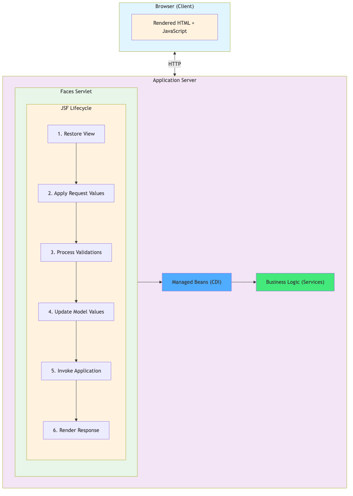
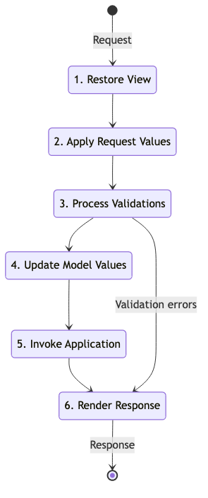

Lecture 2B: JavaServer Faces (JSF)
Jakarta EE 10 & MicroProfile Course
ESIPE - Advanced Java Enterprise Development
1 / 71Introduction to JSF
2 / 71What is JavaServer Faces?
JSF is a component-based web framework for building Java web applications
Key Characteristics
- Component-based: UI built from reusable components
- Event-driven: User interactions trigger server-side events
- MVC architecture: Clear separation of concerns
- Facelets: Modern templating system
- AJAX support: Built-in asynchronous updates
- Validation: Integrated validation framework
- Internationalization: Built-in i18n support
JSF vs Traditional Web Technologies
| Aspect | JSP/Servlets | JSF |
|---|---|---|
| Approach | Page-centric | Component-centric |
| State Management | Manual | Automatic |
| Validation | Manual | Declarative |
| AJAX | Manual JavaScript | Built-in tags |
| Reusability | Limited | High (components) |
| Learning Curve | Lower | Higher |
When to use JSF:
- Complex forms with validation
- Rich component libraries needed
- Rapid development required
- Enterprise applications
JSF Architecture

5 / 71JSF Lifecycle
6 / 71The Six Phases
1. Restore View
- Builds or restores component tree
- First request: creates new view
- Postback: restores existing view from state
2. Apply Request Values
- Extracts values from HTTP request
- Stores in component tree
- Queues events
3. Process Validations
- Validates converted values
- Executes validators
- Queues validation messages
The Six Phases (continued)
4. Update Model Values
- Updates backing bean properties
- Only if validation passed
- Uses EL expressions
5. Invoke Application
- Executes application logic
- Handles action events
- Navigation processing
6. Render Response
- Generates HTML response
- Saves view state
- Sends to client
Lifecycle Diagram

Short-circuit scenarios:
- Validation errors → skip to Render Response
- Immediate actions → skip validation
- Navigation → skip remaining phases
Managed Beans
10 / 71Managed Beans with CDI
Managed beans are Java classes that back JSF pages
java
import jakarta.inject.Named;
import jakarta.enterprise.context.RequestScoped;
import java.io.Serializable;
@Named
@RequestScoped
public class ClientBean implements Serializable {
private String name;
private String email;
// Getters and setters
public String getName() { return name; }
public void setName(String name) { this.name = name; }
public String getEmail() { return email; }
public void setEmail(String email) { this.email = email; }
// Action method
public String save() {
// Business logic
return "success"; // Navigation outcome
}
}
11 / 71
Bean Scopes
| Scope | Annotation | Lifecycle | Use Case |
|---|---|---|---|
| Request | @RequestScoped | Single HTTP request | Simple forms |
| View | @ViewScoped | Single JSF view | Multi-step forms, AJAX |
| Session | @SessionScoped | HTTP session | User data, shopping cart |
| Application | @ApplicationScoped | Application lifetime | Configuration, cache |
| Conversation | @ConversationScoped | Multiple requests | Wizards, workflows |
Best Practice: Use the narrowest scope possible
12 / 71Complete Managed Bean Example
java
@Named
@ViewScoped
public class ClientBean implements Serializable {
@Inject
private ClientService clientService;
private Client client = new Client();
private List<Client> clients;
private Long selectedClientId;
@PostConstruct
public void init() {
loadClients();
}
public void loadClients() {
clients = clientService.findAll();
}
public String save() {
try {
clientService.save(client);
FacesContext.getCurrentInstance().addMessage(null,
new FacesMessage("Client saved successfully"));
loadClients();
client = new Client(); // Reset form
return null; // Stay on same page
} catch (Exception e) {
FacesContext.getCurrentInstance().addMessage(null,
new FacesMessage(FacesMessage.SEVERITY_ERROR,
"Error saving client", e.getMessage()));
return null;
}
}
public String edit() {
client = clientService.findById(selectedClientId);
return "client-form?faces-redirect=true";
}
public String delete() {
clientService.delete(selectedClientId);
loadClients();
return null;
}
// Getters and setters...
}
13 / 71
Facelets Templating
14 / 71What are Facelets?
Facelets is the view declaration language for JSF
Features
- XHTML-based: Valid XML syntax
- Templating: Reusable page layouts
- Composition: Component composition
- EL expressions:
#{bean.property} - Custom components: Easy to create
- No scriptlets: Pure declarative
Basic Facelets Page
xhtml
<!DOCTYPE html>
<html xmlns="http://www.w3.org/1999/xhtml"
xmlns:h="jakarta.faces.html"
xmlns:f="jakarta.faces.core">
<h:head>
<title>Client Form</title>
<h:outputStylesheet library="css" name="style.css"/>
</h:head>
<h:body>
<h1>Client Registration</h1>
<h:form id="clientForm">
<h:panelGrid columns="2">
<h:outputLabel value="Name:" for="name"/>
<h:inputText id="name" value="#{clientBean.client.name}"
required="true"/>
<h:outputLabel value="Email:" for="email"/>
<h:inputText id="email" value="#{clientBean.client.email}"
required="true"/>
</h:panelGrid>
<h:commandButton value="Save" action="#{clientBean.save}"/>
<h:messages/>
</h:form>
</h:body>
</html>
16 / 71
Template Layout
Template file (template.xhtml):
xhtml
<!DOCTYPE html>
<html xmlns="http://www.w3.org/1999/xhtml"
xmlns:h="jakarta.faces.html"
xmlns:ui="jakarta.faces.facelets">
<h:head>
<title><ui:insert name="title">Default Title</ui:insert></title>
<h:outputStylesheet library="css" name="style.css"/>
</h:head>
<h:body>
<div id="header">
<ui:insert name="header">
<h1>Banking Application</h1>
</ui:insert>
</div>
<div id="content">
<ui:insert name="content">
</ui:insert>
</div>
<div id="footer">
<ui:insert name="footer">
<p>© 2026 ESIPE Bank</p>
</ui:insert>
</div>
</h:body>
</html>
17 / 71
Using Templates
Page using template (client-list.xhtml):
xhtml
<!DOCTYPE html>
<html xmlns="http://www.w3.org/1999/xhtml"
xmlns:ui="jakarta.faces.facelets"
xmlns:h="jakarta.faces.html"
xmlns:f="jakarta.faces.core">
<ui:composition template="/WEB-INF/templates/template.xhtml">
<ui:define name="title">Client List</ui:define>
<ui:define name="content">
<h2>Clients</h2>
<h:form>
<h:dataTable value="#{clientBean.clients}" var="client"
styleClass="data-table">
<h:column>
<f:facet name="header">ID</f:facet>
#{client.id}
</h:column>
<h:column>
<f:facet name="header">Name</f:facet>
#{client.name}
</h:column>
<h:column>
<f:facet name="header">Email</f:facet>
#{client.email}
</h:column>
<h:column>
<f:facet name="header">Actions</f:facet>
<h:commandButton value="Edit"
action="#{clientBean.edit(client.id)}"/>
<h:commandButton value="Delete"
action="#{clientBean.delete(client.id)}"/>
</h:column>
</h:dataTable>
</h:form>
</ui:define>
</ui:composition>
</html>
18 / 71
JSF Components
19 / 71Core Components
Input Components
xhtml
<h:inputText value="#{bean.name}" required="true"/>
<h:inputSecret value="#{bean.password}"/>
<h:inputTextarea value="#{bean.description}" rows="5" cols="40"/>
<h:selectBooleanCheckbox value="#{bean.accepted}"/>
<h:selectOneRadio value="#{bean.gender}">
<f:selectItem itemValue="M" itemLabel="Male"/>
<f:selectItem itemValue="F" itemLabel="Female"/>
</h:selectOneRadio>
<h:selectOneMenu value="#{bean.country}">
<f:selectItems value="#{bean.countries}"/>
</h:selectOneMenu>
<h:selectManyCheckbox value="#{bean.interests}">
<f:selectItems value="#{bean.availableInterests}"/>
</h:selectManyCheckbox>
20 / 71
Output and Command Components
xhtml
<h:outputText value="#{bean.message}"/>
<h:outputLabel value="Name:" for="nameInput"/>
<h:outputLink value="http://example.com">
<h:outputText value="Visit Example"/>
</h:outputLink>
<h:commandButton value="Save" action="#{bean.save}"/>
<h:commandLink value="Delete" action="#{bean.delete}"/>
<h:button value="Cancel" outcome="index"/>
<h:link value="Back" outcome="client-list"/>
21 / 71
Layout Components
xhtml
<h:panelGrid columns="2" styleClass="form-grid">
<h:outputLabel value="Name:"/>
<h:inputText value="#{bean.name}"/>
<h:outputLabel value="Email:"/>
<h:inputText value="#{bean.email}"/>
</h:panelGrid>
<h:panelGroup layout="block" styleClass="form-section">
<h:outputText value="Personal Information"/>
</h:panelGroup>
<h:dataTable value="#{bean.items}" var="item">
<h:column>
<f:facet name="header">Name</f:facet>
#{item.name}
</h:column>
</h:dataTable>
<ui:repeat value="#{bean.items}" var="item">
<div>#{item.name}</div>
</ui:repeat>
22 / 71
Validation and Conversion
23 / 71Built-in Validators
xhtml
<h:inputText value="#{bean.name}" required="true"
requiredMessage="Name is required"/>
<h:inputText value="#{bean.username}">
<f:validateLength minimum="3" maximum="20"/>
</h:inputText>
<h:inputText value="#{bean.age}">
<f:validateLongRange minimum="18" maximum="100"/>
</h:inputText>
<h:inputText value="#{bean.email}">
<f:validateRegex pattern="[a-zA-Z0-9._%+-]+@[a-zA-Z0-9.-]+\.[a-zA-Z]{2,}"/>
</h:inputText>
<h:inputText value="#{bean.client.email}"/>
24 / 71
Custom Validator
Validator class:
java
@FacesValidator("emailValidator")
public class EmailValidator implements Validator<String> {
private static final Pattern EMAIL_PATTERN =
Pattern.compile("^[A-Za-z0-9+_.-]+@(.+)$");
@Override
public void validate(FacesContext context, UIComponent component,
String value) throws ValidatorException {
if (value == null || value.isEmpty()) {
return; // Use required="true" for required validation
}
if (!EMAIL_PATTERN.matcher(value).matches()) {
FacesMessage msg = new FacesMessage(
"Invalid email format",
"Please enter a valid email address");
msg.setSeverity(FacesMessage.SEVERITY_ERROR);
throw new ValidatorException(msg);
}
}
}
Usage:
xhtml
<h:inputText value="#{bean.email}">
<f:validator validatorId="emailValidator"/>
</h:inputText>
25 / 71
Converters
Built-in converters:
xhtml
<h:outputText value="#{bean.price}">
<f:convertNumber type="currency" currencySymbol="€"/>
</h:outputText>
<h:outputText value="#{bean.birthDate}">
<f:convertDateTime pattern="dd/MM/yyyy"/>
</h:outputText>
<h:inputText value="#{bean.amount}">
<f:convertNumber minFractionDigits="2" maxFractionDigits="2"/>
</h:inputText>
26 / 71
Custom Converter
java
@FacesConverter(value = "clientConverter", managed = true)
public class ClientConverter implements Converter<Client> {
@Inject
private ClientService clientService;
@Override
public Client getAsObject(FacesContext context, UIComponent component,
String value) {
if (value == null || value.isEmpty()) {
return null;
}
try {
Long id = Long.parseLong(value);
return clientService.findById(id);
} catch (NumberFormatException e) {
throw new ConverterException(
new FacesMessage("Invalid client ID"));
}
}
@Override
public String getAsString(FacesContext context, UIComponent component,
Client client) {
if (client == null) {
return "";
}
return String.valueOf(client.getId());
}
}
27 / 71
AJAX with JSF
28 / 71AJAX Support
JSF provides built-in AJAX through
Benefits
- Partial page updates: Update only specific components
- Reduced bandwidth: Send/receive only necessary data
- Better UX: No full page refresh
- Easy to use: Declarative approach
- Automatic: Handles JavaScript complexity
Basic AJAX Example
xhtml
<h:form>
<h:inputText value="#{bean.searchTerm}">
<f:ajax event="keyup"
listener="#{bean.search}"
render="results"/>
</h:inputText>
<h:panelGroup id="results">
<h:dataTable value="#{bean.searchResults}" var="result">
<h:column>
#{result.name}
</h:column>
</h:dataTable>
</h:panelGroup>
<h:commandButton value="Load More" action="#{bean.loadMore}">
<f:ajax execute="@form" render="results"/>
</h:commandButton>
</h:form>
30 / 71
AJAX Attributes
| Attribute | Description | Example |
|---|---|---|
| event | JavaScript event | keyup, change, click |
| execute | Components to process | @form, @this, componentId |
| render | Components to update | @form, @this, componentId |
| listener | Method to invoke | #{bean.method} |
| onevent | JavaScript callback | handleAjaxEvent |
| onerror | Error handler | handleAjaxError |
Special keywords:
@this: Current component@form: Enclosing form@all: Entire page@none: Nothing
Advanced AJAX Example
xhtml
<h:form id="clientForm">
<h:panelGrid columns="2">
<h:outputLabel value="Country:"/>
<h:selectOneMenu value="#{bean.selectedCountry}">
<f:selectItems value="#{bean.countries}"/>
<f:ajax event="change"
listener="#{bean.loadCities}"
render="cityMenu"/>
</h:selectOneMenu>
<h:outputLabel value="City:"/>
<h:selectOneMenu id="cityMenu" value="#{bean.selectedCity}">
<f:selectItems value="#{bean.cities}"/>
</h:selectOneMenu>
</h:panelGrid>
<h:commandButton value="Save" action="#{bean.save}">
<f:ajax execute="@form"
render="@form messages"
onevent="handleSave"/>
</h:commandButton>
<h:messages id="messages"/>
</h:form>
<script>
function handleSave(data) {
var status = data.status;
if (status === "success") {
console.log("Save completed successfully");
}
}
</script>
32 / 71
Navigation
33 / 71Navigation Rules
Implicit Navigation
Return outcome from action method:
java
@Named
@RequestScoped
public class ClientBean {
public String save() {
// Save logic
return "client-list"; // Navigate to client-list.xhtml
}
public String cancel() {
return "index?faces-redirect=true"; // Redirect
}
public String edit() {
return "client-form?faces-redirect=true&includeViewParams=true";
}
}
In Facelets:
xhtml
<h:commandButton value="Save" action="#{clientBean.save}"/>
<h:button value="Cancel" outcome="index"/>
34 / 71
Navigation Modes
1. Forward (default)
java
return "client-list"; // Forward to client-list.xhtml
- Server-side forward
- URL doesn't change
- Faster
- Can't bookmark
2. Redirect
java
return "client-list?faces-redirect=true";
- HTTP redirect
- URL changes
- Can bookmark
- Prevents double-submit
3. With Parameters
java
return "client-details?faces-redirect=true&id=" + clientId;
35 / 71
View Parameters
Passing parameters between pages:
Source page:
xhtml
<h:commandButton value="Edit"
action="#{clientBean.edit}">
<f:param name="id" value="#{client.id}"/>
</h:commandButton>
Target page:
xhtml
<f:metadata>
<f:viewParam name="id" value="#{clientBean.clientId}"/>
<f:viewAction action="#{clientBean.load}"/>
</f:metadata>
Backing bean:
java
@Named
@ViewScoped
public class ClientBean implements Serializable {
private Long clientId;
private Client client;
public void load() {
if (clientId != null) {
client = clientService.findById(clientId);
}
}
// Getters and setters
}
Explicit Navigation Rules
Navigation rules in faces-config.xml provide centralized navigation configuration
Why Use Navigation Rules?
- ✅ Centralization: All navigation logic in one place
- ✅ Abstraction: Change view paths without touching code
- ✅ Maintainability: Easier to manage complex navigation
- ✅ Flexibility: Conditional navigation based on outcomes
Navigation Rule Structure
xml
<navigation-rule>
<from-view-id>*</from-view-id>
<navigation-case>
<from-outcome>client-list</from-outcome>
<to-view-id>/views/client-list.xhtml</to-view-id>
<redirect/>
</navigation-case>
</navigation-rule>
Key Elements
| Element | Purpose |
|---|---|
| Source page (use * for all pages) |
| Value returned by backing bean method |
| Path to target XHTML file |
| Forces HTTP redirect (changes URL) |
Navigation Flow Example
1. Backing Bean Returns Outcome
java
@Named
@ViewScoped
public class ClientBean implements Serializable {
public String save() {
clientService.save(client);
return "client-list?faces-redirect=true"; // ← Returns outcome
}
public String edit() {
client = clientService.findById(selectedClientId);
return "client-form?faces-redirect=true"; // ← Returns outcome
}
}
38 / 71
Navigation Flow Example (cont.)
2. JSF Finds Matching Navigation Rule
xml
<navigation-rule>
<from-view-id>*</from-view-id>
<navigation-case>
<from-outcome>client-list</from-outcome>
<to-view-id>/views/client-list.xhtml</to-view-id>
<redirect/>
</navigation-case>
<navigation-case>
<from-outcome>client-form</from-outcome>
<to-view-id>/views/client-form.xhtml</to-view-id>
<redirect/>
</navigation-case>
</navigation-rule>
3. JSF Navigates to Target Page
- Loads
/views/client-list.xhtmlor/views/client-form.xhtml - With
- Without
Multiple Outcome Variants
Support both short and full path outcomes:
xml
<navigation-rule>
<from-view-id>*</from-view-id>
<navigation-case>
<from-outcome>client-list</from-outcome>
<to-view-id>/views/client-list.xhtml</to-view-id>
<redirect/>
</navigation-case>
<navigation-case>
<from-outcome>/views/client-list</from-outcome>
<to-view-id>/views/client-list.xhtml</to-view-id>
<redirect/>
</navigation-case>
</navigation-rule>
Allows flexible usage:
return "client-list?faces-redirect=true";return "/views/client-list?faces-redirect=true";
Redirect vs Forward
With
xml
<navigation-case>
<from-outcome>success</from-outcome>
<to-view-id>/views/success.xhtml</to-view-id>
<redirect/>
</navigation-case>
- ✅ URL changes in browser
- ✅ Can bookmark result page
- ✅ Prevents double-submit (POST-Redirect-GET pattern)
- ❌ Slightly slower (extra HTTP round-trip)
Without
xml
<navigation-case>
<from-outcome>success</from-outcome>
<to-view-id>/views/success.xhtml</to-view-id>
</navigation-case>
- ✅ Faster (no extra HTTP request)
- ✅ Request scope preserved
- ❌ URL doesn't change
- ❌ Can't bookmark
- ❌ Browser refresh resubmits form
Conditional Navigation
Navigate to different pages based on outcome:
xml
<navigation-rule>
<from-view-id>/login.xhtml</from-view-id>
<navigation-case>
<from-outcome>success</from-outcome>
<to-view-id>/dashboard.xhtml</to-view-id>
<redirect/>
</navigation-case>
<navigation-case>
<from-outcome>failure</from-outcome>
<to-view-id>/login.xhtml</to-view-id>
</navigation-case>
<navigation-case>
<from-outcome>admin</from-outcome>
<to-view-id>/admin/dashboard.xhtml</to-view-id>
<redirect/>
</navigation-case>
</navigation-rule>
42 / 71
Implicit vs Explicit Navigation
Implicit Navigation (Modern Approach)
java
// Return direct path - no navigation rules needed
return "/views/client-list.xhtml?faces-redirect=true";
Pros:
- ✅ Simpler for small applications
- ✅ No XML configuration needed
- ✅ Clear and direct
Cons:
- ❌ Paths scattered in code
- ❌ Harder to refactor
- ❌ Less flexible
Implicit vs Explicit Navigation (cont.)
Explicit Navigation (Enterprise Approach)
java
// Return logical outcome - navigation rules handle the rest
return "client-list?faces-redirect=true";
xml
<navigation-case>
<from-outcome>client-list</from-outcome>
<to-view-id>/views/client-list.xhtml</to-view-id>
<redirect/>
</navigation-case>
Pros:
- ✅ Centralized configuration
- ✅ Easy to refactor (change XML, not code)
- ✅ Better for large applications
- ✅ Supports complex navigation logic
Cons:
- ❌ Extra XML configuration
- ❌ Indirection (outcome → rule → view)
Best Practices
1. Use Wildcards for Global Rules
xml
<navigation-rule>
<from-view-id>*</from-view-id>
</navigation-rule>
2. Always Use Redirect for POST Operations
xml
<navigation-case>
<from-outcome>save-success</from-outcome>
<to-view-id>/views/list.xhtml</to-view-id>
<redirect/>
</navigation-case>
3. Group Related Navigation Rules
xml
<navigation-rule>
<from-view-id>*</from-view-id>
<navigation-case>
<from-outcome>client-list</from-outcome>
<to-view-id>/views/client-list.xhtml</to-view-id>
<redirect/>
</navigation-case>
<navigation-case>
<from-outcome>client-form</from-outcome>
<to-view-id>/views/client-form.xhtml</to-view-id>
<redirect/>
</navigation-case>
</navigation-rule>
45 / 71
Composite Components
47 / 71Creating Reusable Components
Composite components allow you to create custom, reusable UI components
Benefits
- Reusability: Use across multiple pages
- Encapsulation: Hide complexity
- Maintainability: Change once, update everywhere
- Consistency: Uniform look and feel
Composite Component Example
Component definition (/resources/components/addressInput.xhtml):
xhtml
<!DOCTYPE html>
<html xmlns="http://www.w3.org/1999/xhtml"
xmlns:h="jakarta.faces.html"
xmlns:f="jakarta.faces.core"
xmlns:composite="jakarta.faces.composite">
<composite:interface>
<composite:attribute name="address" required="true"
type="com.bank.model.Address"/>
<composite:attribute name="required" default="false"/>
</composite:interface>
<composite:implementation>
<h:panelGrid columns="2" styleClass="address-input">
<h:outputLabel value="Street:"/>
<h:inputText value="#{cc.attrs.address.street}"
required="#{cc.attrs.required}"/>
<h:outputLabel value="City:"/>
<h:inputText value="#{cc.attrs.address.city}"
required="#{cc.attrs.required}"/>
<h:outputLabel value="Postal Code:"/>
<h:inputText value="#{cc.attrs.address.postalCode}"
required="#{cc.attrs.required}"/>
<h:outputLabel value="Country:"/>
<h:selectOneMenu value="#{cc.attrs.address.country}">
<f:selectItems value="#{countryBean.countries}"/>
</h:selectOneMenu>
</h:panelGrid>
</composite:implementation>
</html>
49 / 71
Using Composite Components
xhtml
<!DOCTYPE html>
<html xmlns="http://www.w3.org/1999/xhtml"
xmlns:h="jakarta.faces.html"
xmlns:comp="jakarta.faces.composite/components">
<h:head>
<title>Client Form</title>
</h:head>
<h:body>
<h:form>
<h:panelGrid columns="2">
<h:outputLabel value="Name:"/>
<h:inputText value="#{clientBean.client.name}"/>
<h:outputLabel value="Email:"/>
<h:inputText value="#{clientBean.client.email}"/>
</h:panelGrid>
<h3>Address</h3>
<comp:addressInput address="#{clientBean.client.address}"
required="true"/>
<h:commandButton value="Save" action="#{clientBean.save}"/>
</h:form>
</h:body>
</html>
50 / 71
JSF vs JSP
51 / 71Comparison
| Aspect | JSP | JSF |
|---|---|---|
| Paradigm | Page-centric | Component-centric |
| State | Stateless | Stateful |
| Components | Basic tags | Rich components |
| Validation | Manual | Built-in |
| AJAX | Manual | Declarative |
| Templating | Include/tag files | Facelets |
| Learning | Easier | Steeper |
| Performance | Faster | More overhead |
| Use Case | Simple pages | Complex forms |
When to Use Each
Use JSP when:
- Simple, read-only pages
- Performance is critical
- Minimal user interaction
- Quick prototypes
- Team familiar with JSP
Use JSF when:
- Complex forms with validation
- Rich user interactions
- Component reusability needed
- AJAX-heavy applications
- Enterprise applications
- Rapid development required
PrimeFaces Introduction
54 / 71What is PrimeFaces?
PrimeFaces is a popular JSF component library
Features
- 100+ components: DataTable, Charts, Calendar, etc.
- Themes: 30+ built-in themes
- AJAX: Enhanced AJAX support
- Mobile: Touch-optimized
- Extensions: Advanced features
- Free: Open source
Adding PrimeFaces
xml
<dependency>
<groupId>org.primefaces</groupId>
<artifactId>primefaces</artifactId>
<version>13.0.0</version>
<classifier>jakarta</classifier>
</dependency>
55 / 71
PrimeFaces Example
xhtml
<!DOCTYPE html>
<html xmlns="http://www.w3.org/1999/xhtml"
xmlns:h="jakarta.faces.html"
xmlns:p="http://primefaces.org/ui">
<h:head>
<title>Client Management</title>
</h:head>
<h:body>
<h:form>
<p:dataTable value="#{clientBean.clients}" var="client"
paginator="true" rows="10"
selectionMode="single"
selection="#{clientBean.selectedClient}">
<p:column headerText="ID" sortBy="#{client.id}">
#{client.id}
</p:column>
<p:column headerText="Name" filterBy="#{client.name}">
#{client.name}
</p:column>
<p:column headerText="Email">
#{client.email}
</p:column>
<p:column headerText="Actions">
<p:commandButton value="Edit"
action="#{clientBean.edit}"
update="@form"/>
<p:commandButton value="Delete"
action="#{clientBean.delete}"
update="@form"/>
</p:column>
</p:dataTable>
<p:dialog header="Edit Client"
widgetVar="editDialog"
modal="true">
<h:panelGrid columns="2">
<p:outputLabel value="Name:"/>
<p:inputText value="#{clientBean.selectedClient.name}"/>
<p:outputLabel value="Email:"/>
<p:inputText value="#{clientBean.selectedClient.email}"/>
</h:panelGrid>
<p:commandButton value="Save"
action="#{clientBean.save}"
oncomplete="PF('editDialog').hide()"/>
</p:dialog>
</h:form>
</h:body>
</html>
56 / 71
Best Practices
57 / 71JSF Best Practices
1. Use Appropriate Scopes
java
// ❌ Bad: Session scope for simple form
@Named
@SessionScoped
public class ClientBean { }
// ✅ Good: View scope for forms with AJAX
@Named
@ViewScoped
public class ClientBean implements Serializable { }
2. Implement Serializable
java
// ✅ All non-request scoped beans must be Serializable
@Named
@ViewScoped
public class ClientBean implements Serializable {
private static final long serialVersionUID = 1L;
}
58 / 71
Best Practices (continued)
3. Use CDI, not JSF Managed Beans
java
// ❌ Old way (deprecated)
@ManagedBean
@ViewScoped
public class ClientBean { }
// ✅ Modern way
@Named
@ViewScoped
public class ClientBean { }
4. Avoid Business Logic in Beans
java
// ❌ Bad: Business logic in backing bean
@Named
public class ClientBean {
public void save() {
// Database operations here
}
}
// ✅ Good: Delegate to service
@Named
public class ClientBean {
@Inject
private ClientService service;
public void save() {
service.save(client);
}
}
59 / 71
Best Practices (continued)
5. Use Faces Redirect
java
// ❌ Bad: Forward (URL doesn't change)
return "client-list";
// ✅ Good: Redirect (clean URL, prevents double-submit)
return "client-list?faces-redirect=true";
6. Handle Exceptions Properly
java
public String save() {
try {
clientService.save(client);
addMessage("Success", "Client saved");
return "client-list?faces-redirect=true";
} catch (Exception e) {
addErrorMessage("Error", e.getMessage());
return null; // Stay on same page
}
}
private void addMessage(String summary, String detail) {
FacesContext.getCurrentInstance().addMessage(null,
new FacesMessage(FacesMessage.SEVERITY_INFO, summary, detail));
}
60 / 71
Best Practices (continued)
7. Use Templates
xhtml
<ui:composition template="/WEB-INF/templates/main.xhtml">
<ui:define name="content">
</ui:define>
</ui:composition>
8. Optimize AJAX
xhtml
<f:ajax render="@form"/>
<f:ajax render="resultsPanel messagesPanel"/>
9. Use Composite Components
- Create reusable components for common patterns
- Encapsulate complexity
- Maintain consistency
Configuration
62 / 71web.xml Configuration
xml
<?xml version="1.0" encoding="UTF-8"?>
<web-app xmlns="https://jakarta.ee/xml/ns/jakartaee"
xmlns:xsi="http://www.w3.org/2001/XMLSchema-instance"
xsi:schemaLocation="https://jakarta.ee/xml/ns/jakartaee
https://jakarta.ee/xml/ns/jakartaee/web-app_6_0.xsd"
version="6.0">
<display-name>Banking Application</display-name>
<servlet>
<servlet-name>Faces Servlet</servlet-name>
<servlet-class>jakarta.faces.webapp.FacesServlet</servlet-class>
<load-on-startup>1</load-on-startup>
</servlet>
<servlet-mapping>
<servlet-name>Faces Servlet</servlet-name>
<url-pattern>*.xhtml</url-pattern>
</servlet-mapping>
<welcome-file-list>
<welcome-file>index.xhtml</welcome-file>
</welcome-file-list>
<context-param>
<param-name>jakarta.faces.PROJECT_STAGE</param-name>
<param-value>Development</param-value>
</context-param>
<context-param>
<param-name>jakarta.faces.FACELETS_SKIP_COMMENTS</param-name>
<param-value>true</param-value>
</context-param>
</web-app>
63 / 71
faces-config.xml (Optional)
xml
<?xml version="1.0" encoding="UTF-8"?>
<faces-config xmlns="https://jakarta.ee/xml/ns/jakartaee"
xmlns:xsi="http://www.w3.org/2001/XMLSchema-instance"
xsi:schemaLocation="https://jakarta.ee/xml/ns/jakartaee
https://jakarta.ee/xml/ns/jakartaee/web-facesconfig_4_0.xsd"
version="4.0">
<application>
<locale-config>
<default-locale>en</default-locale>
<supported-locale>fr</supported-locale>
</locale-config>
<resource-bundle>
<base-name>messages</base-name>
<var>msg</var>
</resource-bundle>
</application>
<navigation-rule>
<from-view-id>/client-form.xhtml</from-view-id>
<navigation-case>
<from-outcome>success</from-outcome>
<to-view-id>/client-list.xhtml</to-view-id>
<redirect/>
</navigation-case>
</navigation-rule>
</faces-config>
64 / 71
Summary
65 / 71Key Takeaways
JSF Fundamentals
- Component-based framework for building web UIs
- Six-phase lifecycle manages request processing
- Managed beans with CDI for backing logic
- Facelets for templating and composition
- Built-in validation and conversion
- Declarative AJAX support
- Navigation with implicit and explicit rules
When to Use JSF
- Complex forms with validation
- Rich component libraries needed
- AJAX-heavy applications
- Enterprise applications
- Rapid development
Resources
Official Documentation
- Jakarta Faces Specification: https://jakarta.ee/specifications/faces/
- Jakarta EE Tutorial: https://eclipse-ee4j.github.io/jakartaee-tutorial/
- PrimeFaces: https://www.primefaces.org/
Books
- "The Definitive Guide to JSF in Jakarta EE 10" by Bauke Scholtz
- "Jakarta EE Cookbook" by Elder Moraes
Community
- Stack Overflow: Tag
jsfandjakarta-ee - GitHub: Jakarta Faces project
Lab 2B Preview
JSF Client Management
68 / 71Lab Objectives
In Lab 2B, you will:
- Create JSF pages with Facelets templating
- Implement managed beans with appropriate scopes
- Use JSF validators and converters
- Implement AJAX functionality for search
- Create reusable composite components
- Apply JSF navigation patterns
- Build a complete CRUD interface with JSF
Duration: 3 hours
69 / 71Questions?
Next Lecture: Lecture 3 - JPA & Database Integration
70 / 71References
- Jakarta Faces Specification 4.0
- Jakarta EE 10 Tutorial - Web Tier
- PrimeFaces User Guide
- "Core JavaServer Faces" by David Geary and Cay Horstmann
- Baeldung JSF Tutorials
- Oracle JSF Documentation (historical reference)